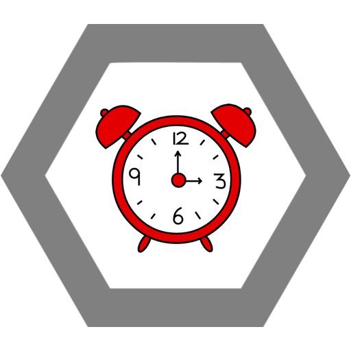

Přirozené prostředí Verunátora Bambulonosého je v knihovně, posteli nebo na cestě mezi těmito dvěma místy.

Vypadávající vlas
Verunátor si značkuje své teritorium odpadávajícími vlasy a nepřátelé se do nich často zamotávají. 10% slow aura.
Zatočená linka
Bambulonos si nakreslí oční linky tak zatočené, až se z toho nepřátelům zamotá šiška. Ti ztrácí schopnost chodit rovně a upadají do deliria. AOE +60% miss chance.
Úder knihou
Verunátor vytáhne z růžové brašny jednu z 16 knih které jí tam leží a udeří s ní nepřítele. Stun 2 s, 3-6 dmg v závislosti na velikosti dané bychle (RNG).
Dlouhý spánek bohatýrů
Verunátor ulehne k zimní hybernaci (nebo to tak rozhodně vypadá). Pokud se během tohoto někdo pokusí Verunátora kontaktovat vystartuje s neobvyklou razancí a silou na infiltrátora. Enrage: +150% dmg, +30% attack speed. Friendly fire enabled. Duration: 10-120 minut (RNG)

Ulti
Pozdní příchod, channeled. Verunátor bez ohlášení přijde v libovolný čas (5 minut až 47 hodin) později než ohlásila. Nepřítel mezitím umírá hlady, zimou a nudou. 10dmg/15 minut channelování.